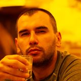

Масалов Артём Сергеевич
Днепр
Тел. 067 978 34 31
Email: mas.arty@gmail.com
Дата рождения 27.10.1984г.
|
 |
Иностранные языки:
Английский язык общий и специализированный по ПК. Свободное владение украинским языком.
Дополнительные навыки:
ПК: Windows XP, 2003, Seven, Vista, 2008, 2012, 10 на уровне администратора, установка и настройка стандартного набора программ (MS Office, почтовый клиент, 1С, ИСПро, МЕДок и т.д.). Установка Debian, Ubuntu. Установка и настройка сервера виртуализации Proxmox. Настройка сервера терминалов, почтового сервера, gateway, MS SQL, IP телефония Elastix, настройка видеонаблюдения. Поиск и уничтожение вирусов. Настройка и прокладка ЛВС. Водительское удостоверение категории В. Закупка оборудования через Прозоро.
Личные качества:
Порядочность, работоспособность, аккуратность, пунктуальность, коммуникабельность, стрессоустойчивость.
Образование
| 2000 – 2004гг |
Днепропетровский техникум сварки и электроники им. Е.О. Патона.
Специальность «Обслуживание компьютерных и интеллектуальных систем и сетей», квалификация техник компьютерной техники. |
| 2004 – 2007гг |
Национальная металлургическая академия Украины по специальности – «Информационные и управляющие системы и технологии». |